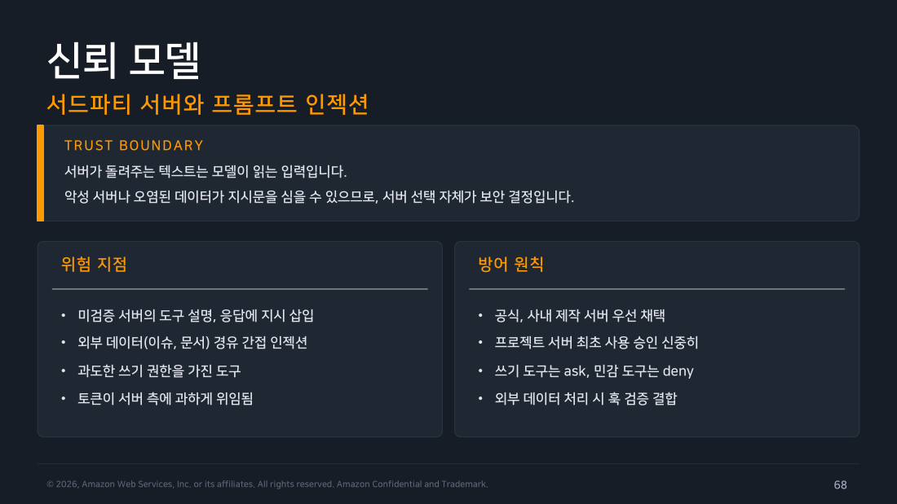

Part 6 — MCP 운영과 보안¶
한 줄 요약¶
MCP 서버가 돌려주는 텍스트는 그대로 모델의 입력이 되므로, 서버를 하나 연결하는 것 자체가 보안 결정이고 방어는 서버 선택·조직 allowlist·훅 가드 3중 구조로 겹쳐야 합니다.
Note
이 파트는 별도 실습 없이 정리한 파트입니다. 아래 서술은 교재·공식문서 근거이며 1인칭 실습 경험담이 아닙니다.
왜 알아야 하나¶
Part 5까지는 "Claude가 서버에 요청을 보낸다"만 봤는데, 사실 서버가 돌려주는 응답도 그대로 모델이 읽는 텍스트가 됩니다. 이 사실을 놓치면 "믿을 만한 서버니까 연결해도 안전하겠지"라는 판단이 "그 서버가 돌려주는 데이터까지 전부 신뢰할 만한가"라는, 훨씬 좁혀야 할 질문을 건너뛰게 만듭니다.
1. 신뢰 모델 — 서드파티 서버와 프롬프트 인젝션¶
MCP 서버를 연결하는 순간 몇 가지 위험 지점이 생깁니다. 검증되지 않은 서버가 도구 설명이나 응답 자체에 지시문을 심어 모델을 조종하려 들 수 있고(직접 인젝션), 서버가 중계하는 외부 데이터(이슈 본문, 문서 내용)를 거쳐 오염된 지시가 간접적으로 들어올 수도 있습니다(간접 인젝션). 여기에 과도한 쓰기 권한을 가진 도구, 또는 필요 이상으로 서버 측에 위임된 토큰이 더해지면 위험이 커집니다.
방어 원칙은 명확합니다. 공식 서버나 사내에서 직접 만든 서버를 우선 채택하고 프로젝트 스코프 서버는 최초 승인을 신중하게 처리합니다. 쓰기 계열 도구는 ask로, 민감한 도구는 deny로 권한 규칙(Part 2)을 걸고 외부 데이터를 처리하는 지점에는 훅 검증(아래 3번)을 결합합니다.

▲ 교재 슬라이드 68 — 신뢰 모델
교재는 github, sentry, slack, notion 같은 SaaS 서버(대체로 http+OAuth 패턴)와 playwright, postgres 계열 같은 로컬 서버(stdio+npx 패턴) 예시를 듭니다. 사내 위키·배포 시스템을 직접 서버로 만드는 방법은 Agent SDK 문서와 6주차에서 다룹니다.
2. 조직 통제 — 강도가 다른 세 단계¶
3주차에서 다룬 managed 계층은 MCP에도 전용 키를 가지며 통제 강도가 약한 것부터 센 것까지 단계가 있습니다.
- allowlist —
allowedMcpServers로 승인된 서버만 화이트리스트로 허용(빈 배열은 전면 봉쇄). - 긴급 차단 —
deniedMcpServers로 특정 서버를 즉시 명시 차단. allowlist보다 우선해 사고 대응 시 바로 배포할 수 있습니다. - managed 전용 —
allowManagedMcpServersOnly를 켜면 managed 목록에 없는 서버는 아예 유효하지 않게 되는 최고 수준의 통제입니다.managed-mcp.json으로 조직 표준 서버 정의 자체를 배포할 수도 있습니다.
여기에 더해 disableSideloadFlags(v2.1.193 이상)는 --mcp-config 같은 우회 플래그를 거부하는데, 이 통제는 서브에이전트의 인라인 MCP 정의까지 포함해서 2주차에서 다룬 서브에이전트 경로로 우회하는 것도 막습니다.
3. 훅 결합 — mcp__ 매처로 감사와 검증¶
Part 3·4에서 배운 훅 매처 문법은 MCP 도구에도 그대로 적용됩니다.
{ "hooks": { "PreToolUse": [
{ "matcher": "mcp__.*__(write|create|delete).*",
"hooks": [{ "type": "command",
"command": "${CLAUDE_PROJECT_DIR}/.claude/hooks/mcp-write-guard.sh" }] },
{ "matcher": "mcp__corp-wiki__.*",
"hooks": [{ "type": "command", "async": true,
"command": "jq -c '{ts:now,tool:.tool_name}' >> ~/mcp-audit.jsonl" }] }
] } }
첫 번째 규칙은 정규식으로 "쓰기 계열 동사가 들어간 모든 MCP 도구"를 겨냥해 별도 가드 스크립트를 태우고 두 번째 규칙은 특정 서버(corp-wiki) 전체 호출을 비동기로 감사 로그에 남깁니다. 새로운 매처 문법이 아니라 Part 3의 매처 규칙을 그대로 재사용하는 것뿐입니다.
4. 성능, 트러블슈팅, 운영 규율¶
서버 연결이 늘어나면 기동 지연(stdio 서버 다중 스폰, 원격 핸드셰이크)과 컨텍스트 비용(Part 5의 도구 검색으로 완화) 두 종류가 붙습니다. CI처럼 재현성이 중요한 환경에서는 --strict-mcp-config로 지정된 구성 외의 서버 로드를 배제하고 진단·벤치마크 목적으로는 --bare로 확장 기능 없이 최소 기동할 수 있습니다.
증상별 원인은 이렇게 정리됩니다.
- 서버가 안 보임 → 스코프나 신뢰 승인이 안 끝났을 가능성.
/mcp에서 목록과 출처를 확인합니다. - connection failed → 명령 경로·URL·네트워크 문제. 서버를 단독 실행하거나
curl로 직접 검증합니다. - 401, 인증 오류 → OAuth 토큰 만료나 환경변수 미설정.
/mcp에서 재인증하고env값을 확인합니다. - 도구 호출이 거부됨 → 권한 규칙에 허용이 없는 경우.
/permissions에mcp__규칙을 추가합니다. - 조직에서 차단됨 → allowlist에 없는 서버. 관리자에게 등재를 요청합니다.
- 시작이 느림 → 서버가 과다하거나 무거운 stdio 서버가 있는 경우. 스코프를 줄이거나 도구 검색에 맡깁니다.
운영 규율은 행동 중심으로 네 줄이면 충분합니다: 팀 서버는 .mcp.json, 비밀은 환경변수로 외부화, 쓰기 도구는 ask+훅 가드, 이상하면 /mcp로 확인.
흔한 오해 바로잡기¶
"공식 서버니까 응답까지 전부 안전하다" — 서버 자체의 신뢰도와, 그 서버가 중계하는 외부 데이터(이슈 본문, 문서 내용 등)의 신뢰도는 별개입니다. 공식 GitHub MCP 서버라도 오염된 이슈 본문을 그대로 읽어오면 간접 인젝션 경로가 될 수 있습니다.
정리¶
MCP 서버의 응답은 모델의 입력이라는 전제를 받아들이면, 서버 선택·조직 allowlist·훅 가드라는 3중 방어가 왜 필요한지 자연스럽게 이해됩니다. 조직 통제는 allowlist → 긴급 차단 → managed 전용 순으로 강도가 세지고 서브에이전트의 인라인 정의로 우회하는 경로까지 막아둘 수 있습니다. 성능 문제는 --strict-mcp-config·--bare 같은 진단용 플래그와 도구 검색·스코프 설계로 다스립니다. 다음 파트는 MCP와는 다른 확장 수단인 Command와 Skill을 다루고 언제 어떤 확장 수단을 골라야 하는지 정리합니다.
출처¶
- Claude Code Deep Dive Workshop — Chapter 4 / Part 6: MCP 운영과 보안 (2026.07 판, s66~74)
- 공식 문서: Control MCP server access for your organization